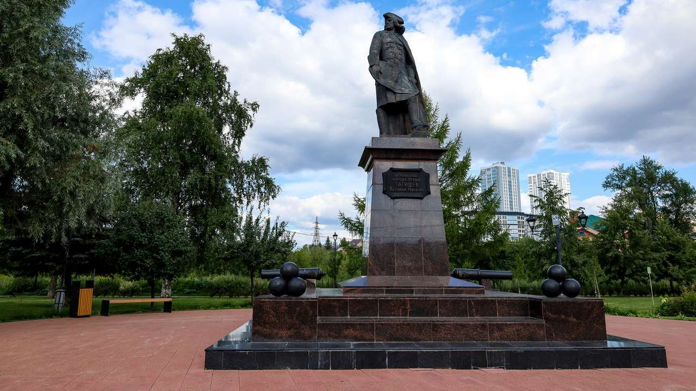

1. Памятник Василию Татищеву
Сквер имени В. Н. Татищева, Разгуляй · Найти на Яндекс Картах

История места
Василий Никитич Татищев — государственный деятель и организатор горнозаводского производства. Он выбрал место для Егошихинского медеплавильного завода, из поселения при котором выросла Пермь.
Памятник установлен в историческом районе Разгуляй. Начинаем маршрут со знакомства с человеком, чьи решения связали это место с промышленным освоением Урала при Петре I.
Значение для Перми и России
Эта остановка раскрывает роль Татищева в истории города и связь основания Перми с развитием российской металлургии. Памятник сохраняет память об одном из организаторов этого процесса.